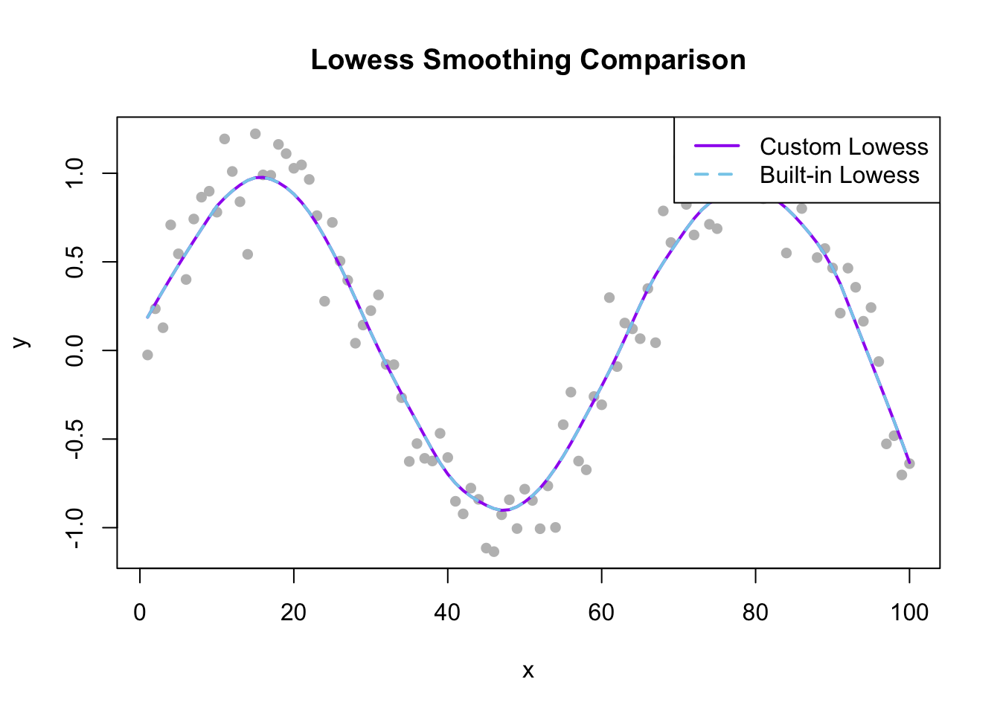

set.seed(1)
x <- c(1:100)
y <- sin(x/10) + rnorm(length(x), mean = 0, sd = 0.2)Practical 2
Generate Simulated Data
LOWESS algorithm
customLowess <- function(x, y, f) {
#Span
#n: number of obs
#k: number of closest neighbors
n <- length(x)
k <- ceiling(f*n)
smooth_val <- numeric(n)
for (i in x) {
#compute weights
#absolute distance
dist <- abs(x - x[i])
#Dmax
nearest <- order(dist)[1:k]
dmax <- max(dist[nearest])
#wj
weights <- (1 - (dist[nearest]/dmax)^3)^3
#Weighted Regression
X <- cbind(1, x[nearest])
W <- diag(weights)
Y <- y[nearest]
#estimate for beta
beta <- solve(t(X) %*% W %*% X) %*% t(X) %*% W %*% Y
#smoothe value
smooth_val[i] <- beta[1] + beta[2] * x[i]
}
return(smooth_val)
}Function value
#Function value
#span - 0.2
f <- 0.2
funct_smooth_val <- customLowess(x, y, f)
funct_smooth_val [1] 0.187572482 0.263567275 0.337723282 0.410117028 0.480993290
[6] 0.550460770 0.618571907 0.685530699 0.751505149 0.814920254
[11] 0.860113789 0.899662311 0.933200174 0.959614183 0.974961198
[16] 0.976624002 0.966716663 0.947417805 0.919624057 0.882631509
[21] 0.836168108 0.779587642 0.713627091 0.639742962 0.560566748
[26] 0.476258347 0.386536566 0.292772220 0.196633503 0.100986428
[31] 0.009325577 -0.077476462 -0.161546929 -0.244320815 -0.324763635
[36] -0.403887507 -0.483185271 -0.561812624 -0.634864520 -0.697647440
[41] -0.749140827 -0.790446617 -0.823283108 -0.850509662 -0.873670660
[46] -0.892223977 -0.902112623 -0.898640282 -0.881693628 -0.854750149
[51] -0.819781878 -0.776800306 -0.724249095 -0.663593651 -0.596532629
[56] -0.523411137 -0.445142931 -0.364068622 -0.282996709 -0.200741520
[61] -0.116347857 -0.027659636 0.065343531 0.160367930 0.255566579
[66] 0.345421577 0.424892615 0.495161241 0.560524088 0.623969304
[71] 0.686385539 0.743892466 0.792915523 0.831242985 0.858450540
[76] 0.874434727 0.881943876 0.885749481 0.887803599 0.887021321
[81] 0.879940549 0.864035942 0.838217748 0.802908239 0.760288823
[86] 0.712994563 0.662010257 0.606079992 0.541265367 0.464826096
[91] 0.376487534 0.265682734 0.155113588 0.045292840 -0.064522970
[96] -0.174976886 -0.286694058 -0.400146780 -0.515487403 -0.632658978R Built-In Function
R_smooth_val <- lowess(x, y, f=0.2, iter = 0)
R_smooth_val$x
[1] 1 2 3 4 5 6 7 8 9 10 11 12 13 14 15 16 17 18
[19] 19 20 21 22 23 24 25 26 27 28 29 30 31 32 33 34 35 36
[37] 37 38 39 40 41 42 43 44 45 46 47 48 49 50 51 52 53 54
[55] 55 56 57 58 59 60 61 62 63 64 65 66 67 68 69 70 71 72
[73] 73 74 75 76 77 78 79 80 81 82 83 84 85 86 87 88 89 90
[91] 91 92 93 94 95 96 97 98 99 100
$y
[1] 0.187572482 0.263567275 0.337723282 0.410117028 0.480993290
[6] 0.550460770 0.618571907 0.685530699 0.751505149 0.814920254
[11] 0.860113789 0.899662311 0.933200174 0.959614183 0.974961198
[16] 0.976624002 0.966716663 0.947417805 0.919624057 0.882631509
[21] 0.836168108 0.779587642 0.713627091 0.639742962 0.560566748
[26] 0.476258347 0.386536566 0.292772220 0.196633503 0.100986428
[31] 0.009325577 -0.077476462 -0.161546929 -0.244320815 -0.324763635
[36] -0.403887507 -0.483185271 -0.561812624 -0.634864520 -0.697647440
[41] -0.749140827 -0.790446617 -0.823283108 -0.850509662 -0.873670660
[46] -0.892223977 -0.902112623 -0.898640282 -0.881693628 -0.854750149
[51] -0.819781878 -0.776800306 -0.724249095 -0.663593651 -0.596532629
[56] -0.523411137 -0.445142931 -0.364068622 -0.282996709 -0.200741520
[61] -0.116347857 -0.027659636 0.065343531 0.160367930 0.255566579
[66] 0.345421577 0.424892615 0.495161241 0.560524088 0.623969304
[71] 0.686385539 0.743892466 0.792915523 0.831242985 0.858450540
[76] 0.874434727 0.881943876 0.885749481 0.887803599 0.887021321
[81] 0.879940549 0.864035942 0.838217748 0.802908239 0.760288823
[86] 0.712994563 0.662010257 0.606079992 0.541265367 0.464826096
[91] 0.376487534 0.265682734 0.155113588 0.045292840 -0.064522970
[96] -0.174976886 -0.286694058 -0.400146780 -0.515487403 -0.632658978Output is the same for the function created and the R built in function
Plot
